Свой оператор — в вашем телефоне
Весь ваш дом на связи — в одном приложении
OrroFi — приложение нашего оператора для абонентов на Costa Brava. Фибра и мобильные линии, ближайший счёт, визит мастера и открытые заявки собраны на одном экране. Открыли телефон — и сразу понятно, что дома всё в порядке или что именно сейчас происходит.
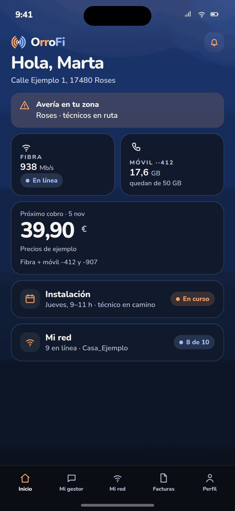
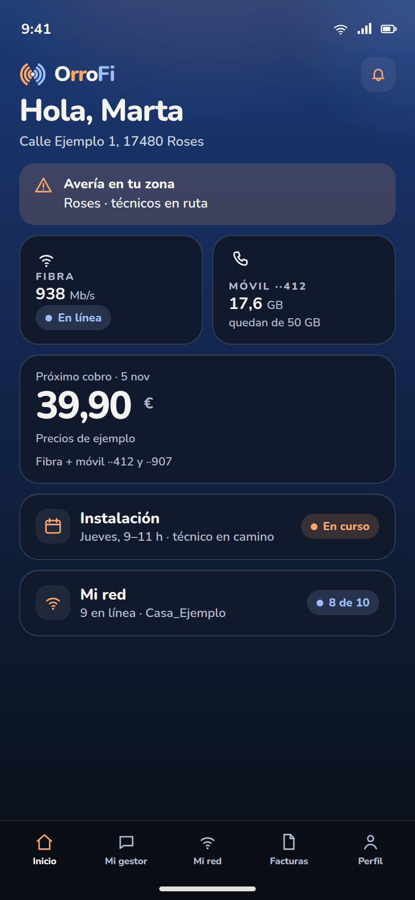
Спросите своими словами — Mi gestor ответит
Mi gestor — помощник с искусственным интеллектом внутри приложения. Он сразу говорит, кто он, отвечает коротко и знает, что происходит с вашими услугами. Спросите, как идёт смена тарифа, или попросите мастера — без ожидания на линии.


Ваш Wi‑Fi — как на ладони
Раздел Mi red показывает домашнюю сеть так, как её видит роутер: сколько устройств в сети, как работает Wi‑Fi, кто подключился недавно. Телевизор в гостиной, телефон дочери, розетка на кухне — у каждого понятное имя. Разбираться в настройках для этого не нужно.

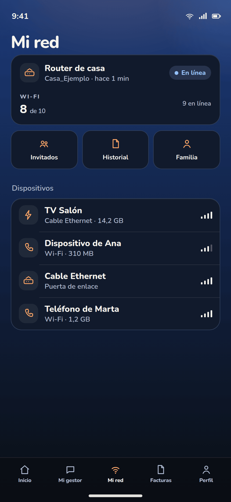
Один дом — несколько телефонов
Домашней сетью пользуется вся семья, поэтому в Mi red можно добавить телефоны близких. Приглашают при встрече, по коду на экране. Владелец видит, кто добавлен, и может убрать телефон, когда захочет.
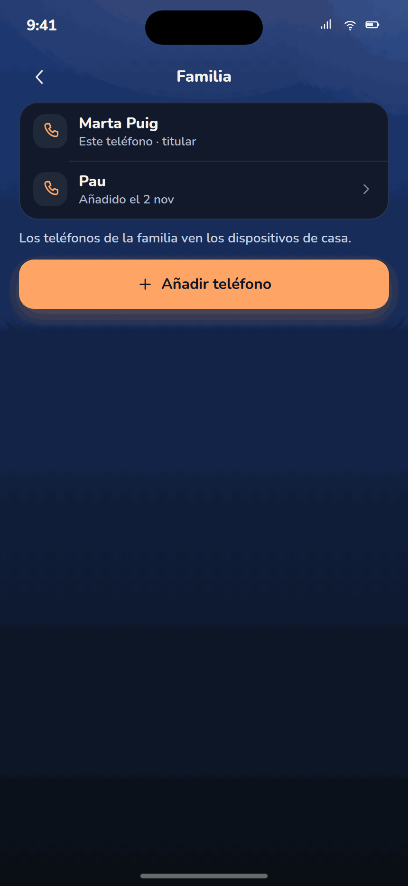
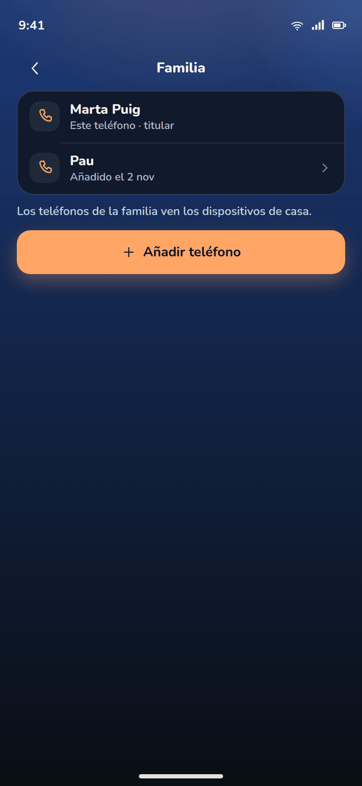
Когда нужно — подключится человек
Не каждый вопрос стоит решать с машиной. Кнопка «Поговорить с человеком» закреплена в чате, а сотрудник получает краткий пересказ разговора, так что объяснять всё заново не придётся. Если сотрудник сейчас не на месте, приложение так и скажет и подскажет, как продолжить.
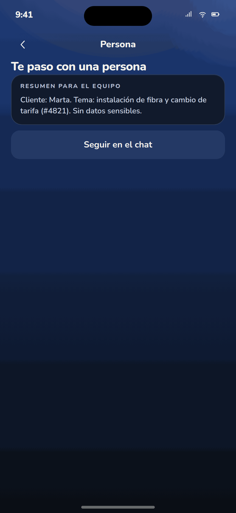
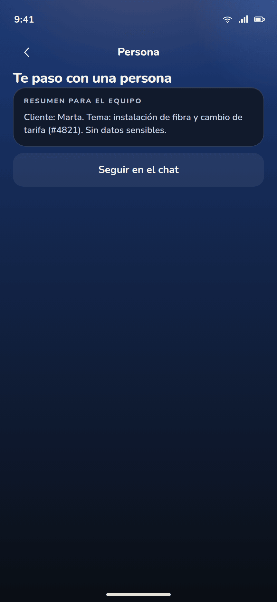
Решаете вы
В разделе «Приватность» собраны ваши согласия: каждое включается и выключается одним переключателем. Там же можно запросить копию своих данных на почту и удалить аккаунт, когда закончатся договоры.


Свой оператор на Costa Brava
Мы работаем здесь, на побережье, и авария в соседнем городке для нас — не строчка в отчёте. Если в вашем районе сбой, приложение покажет, что случилось и на каком этапе ремонт. Нажмите «Сообщить, когда починят» — и не нужно проверять каждые полчаса.
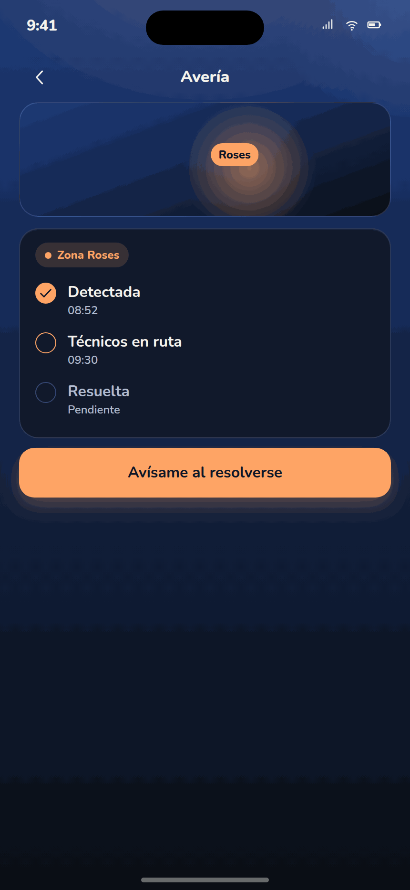

Три шага до своего дома в телефоне
- Скачайте OrroFi и введите номер телефона.
- Введите код из SMS — пароль придумывать не нужно.
- Готово: перед вами услуги, счета и Mi gestor.
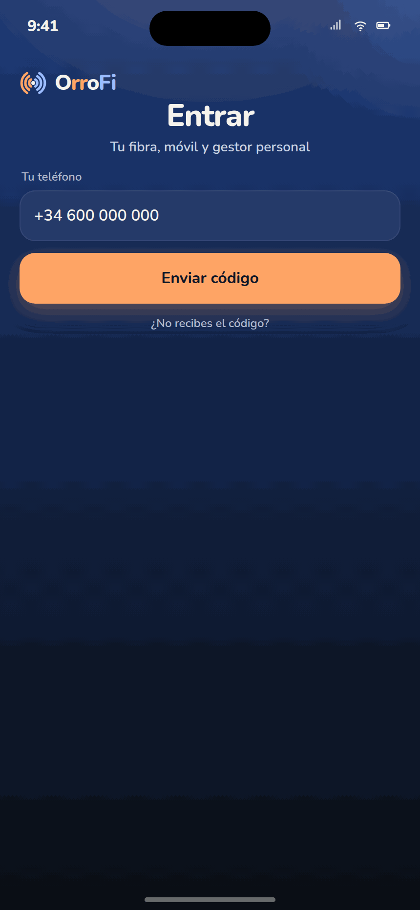


OrroFi — скоро в App Store
Приложение готовится к выходу для iPhone. Пока здесь — экраны будущей версии с вымышленными данными.
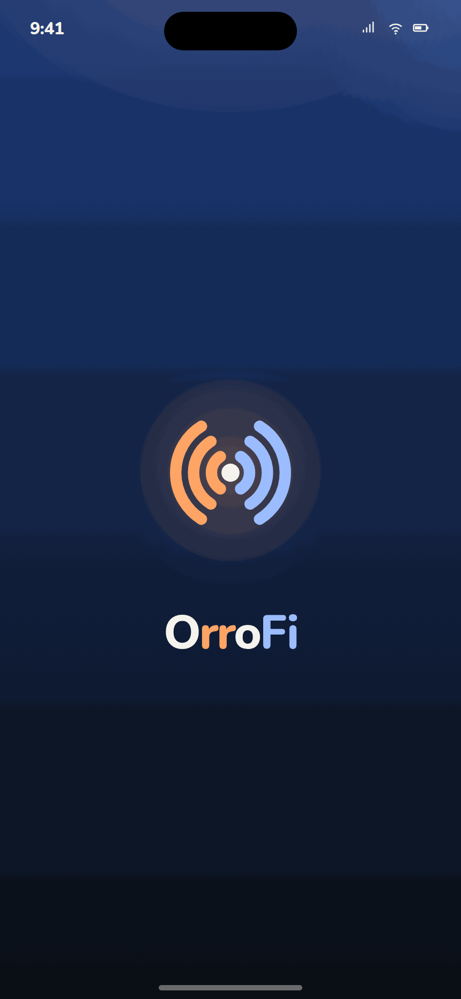
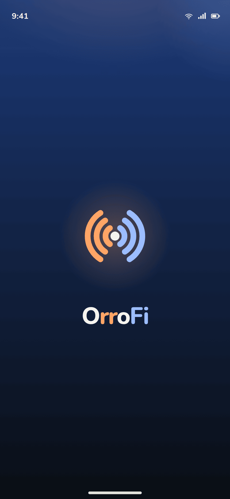